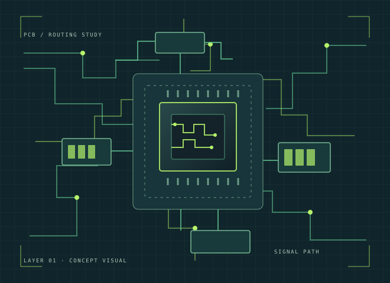
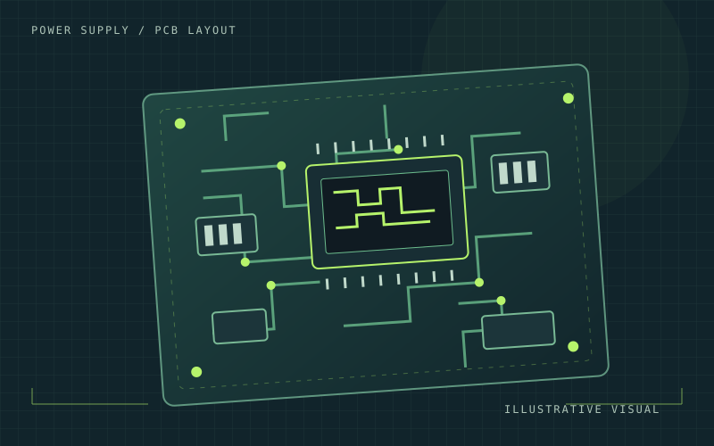
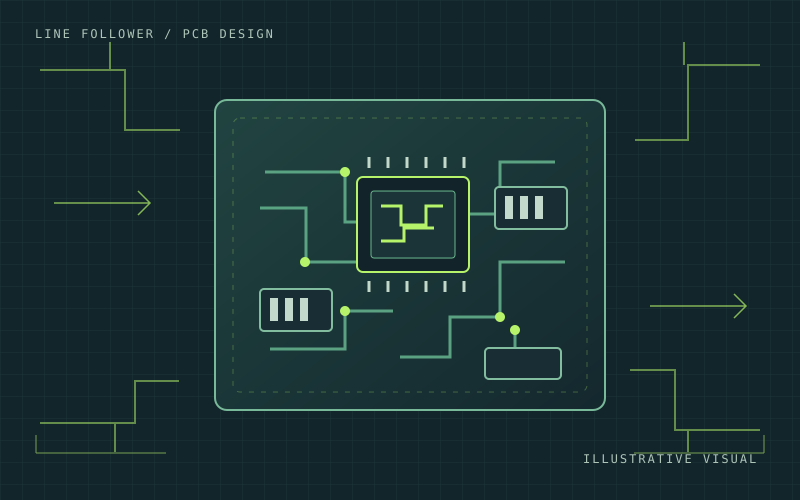
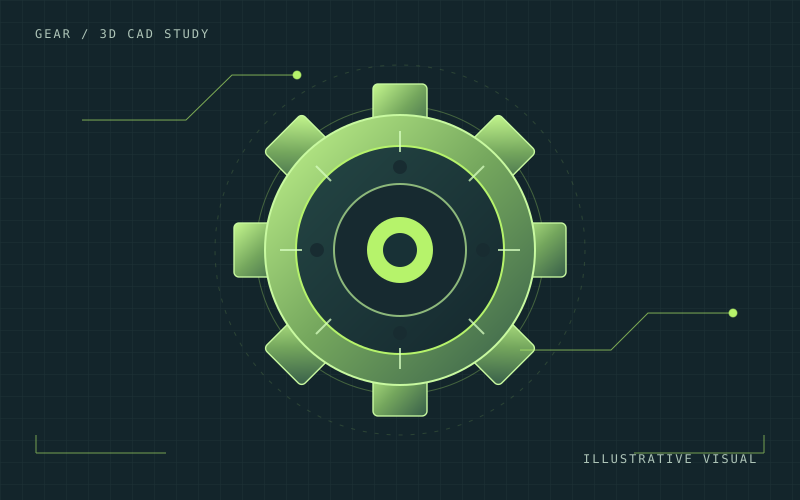

01
Desain PCB
Menyusun skematik dan mengembangkan rancangan ke layout PCB.
KKiCadLayout PCB · Proyek PSU↗
EEAGLESkematik & layout · Line follower↗
eEasyEDAPenggunaan proyek: [Belum diisi]↗
Halo, saya
PCB DESIGNER / HARDWARE ENTHUSIAST
Berfokus pada desain skematik, layout PCB, dan pengembangan ide elektronika menjadi rancangan yang terstruktur.

X 04.21Y 08.16Berangkat dari rasa ingin tahu, dibangun lewat proses dan ketelitian.
Saya memiliki latar belakang pendidikan Teknik Elektronika dan minat pada proses perancangan PCB — mulai dari skematik hingga layout.
Melalui proyek akademik dan pribadi, saya menggunakan Proteus untuk skematik dan simulasi rangkaian, KiCad serta EAGLE untuk desain PCB, dan Autodesk Inventor untuk membuat sketsa serta model 3D gear. Saya berusaha bekerja dengan bertanggung jawab, disiplin terhadap waktu, dan teliti dalam menyelesaikan tugas.
Saya menikmati proses menerjemahkan kebutuhan rangkaian menjadi rancangan yang rapi, meninjau penempatan komponen, dan memvisualisasikan ide sebelum masuk ke tahap berikutnya.
Perangkat lunak yang pernah saya gunakan pada pekerjaan dan proyek yang relevan.
Menyusun skematik dan mengembangkan rancangan ke layout PCB.
Membuat sketsa dan model tiga dimensi untuk objek mekanis.
Dasar pengerjaan rangkaian yang diterapkan dalam proyek elektronika.
* Daftar ini menggambarkan software dan aktivitas yang pernah saya gunakan. Detail tingkat penguasaan dapat dibahas berdasarkan proyek.
Beberapa proyek akademik dan pribadi yang memperlihatkan pendekatan saya dalam desain PCB dan pemodelan 3D.

PROJECT / 01PCB DESIGNAlur pengerjaan dari skematik dan simulasi di Proteus hingga pembuatan layout PCB menggunakan KiCad.
Proyek desain PCB Power Supply yang mencakup skematik, simulasi, dan layout PCB.
[Belum diisi] — kebutuhan PSU, spesifikasi tegangan, arus, dan tujuan rangkaian.
Menyusun skematik dan simulasi rangkaian di Proteus, kemudian membuat layout PCB di KiCad.
Penyusunan skematik, simulasi rangkaian, dan desain layout PCB.
Skematik → simulasi Proteus → layout PCB KiCad. Validasi, fabrikasi, dan pengujian: [Belum diisi].
Skematik, simulasi, dan layout PCB telah dikerjakan. Hasil pengukuran atau pengujian perangkat keras: [Belum diisi].

PROJECT / 02PCB DESIGNDesain skematik dan layout PCB untuk robot line follower dengan software EAGLE.
Proyek desain skematik dan layout PCB untuk robot line follower.
[Belum diisi] — kebutuhan sistem, fungsi rangkaian, dan spesifikasi robot.
Membuat skematik dan desain layout PCB menggunakan EAGLE.
Pembuatan skematik dan desain PCB.
Penyusunan skematik → layout PCB EAGLE. Pemeriksaan, fabrikasi, dan pengujian: [Belum diisi].
Desain skematik dan layout PCB line follower. Dokumentasi implementasi dan hasil uji: [Belum diisi].

PROJECT / 033D CADPembuatan sketsa dan model tiga dimensi gear menggunakan Autodesk Inventor.
Proyek pembuatan sketsa dan model 3D gear menggunakan Autodesk Inventor.
[Belum diisi] — tujuan pemodelan, kebutuhan mekanis, dan spesifikasi dimensi.
Membuat sketsa gear dan mengembangkannya menjadi model 3D.
Pembuatan sketsa dan pemodelan 3D.
Sketsa → model 3D. Pemeriksaan dimensi atau validasi: [Belum diisi].
Model 3D gear. Dimensi, parameter, dan gambar teknik: [Belum diisi].
Catatan dokumentasi — gambar pada kartu proyek adalah ilustrasi visual sementara, bukan hasil asli proyek. Ganti dengan screenshot atau foto hasil pekerjaan sendiri sebelum website dipublikasikan.
Alur kerja yang saya gunakan mengikuti kebutuhan proyek dan tools yang relevan.
Mengidentifikasi tujuan rangkaian dan kebutuhan desain berdasarkan brief proyek.
Menggambarkan hubungan komponen dengan software yang sesuai, seperti Proteus atau EAGLE.
Melakukan simulasi saat diperlukan, lalu merancang layout PCB menggunakan KiCad atau EAGLE.
Memeriksa kembali rancangan dan mendokumentasikan hasil serta catatan yang masih perlu divalidasi.
Program Studi Sarjana Terapan Teknik Elektronika * konfirmasi nama resmi
Saya tertarik pada kesempatan yang relevan dengan PCB Design dan bidang elektronika. Silakan hubungi saya untuk berdiskusi lebih lanjut.
Kirim emailGanti alamat email contoh pada tombol ini dengan email aktifmu sebelum website dipublikasikan.